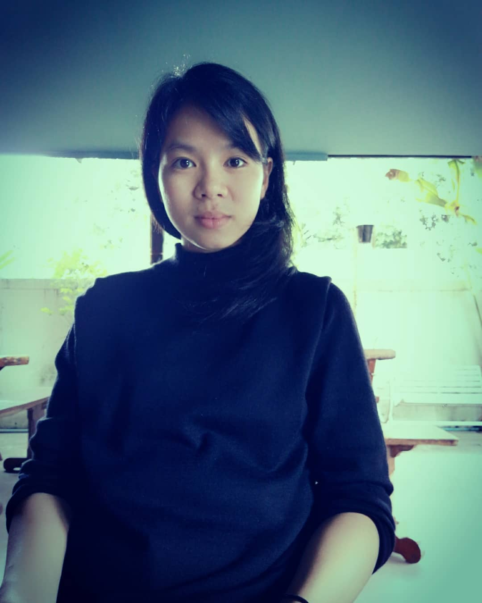

Waranya Apiwong
IT Project Manager
Tel: +6684 611 9917 Email: waranya.apiwong@gmail.com
PROFILE
As an IT Project Manager,I am skilled in managing IT projects and delivering quality results on time and within budget. I have experience with Agile methodologies, as well as other project management principles and tools. With excellent communication, problem-solving and collaboration skills, I am a valuable asset to any organization seeking to successfully deliver IT projects to the satisfaction of stakeholders.
WORK EXPERIENCE
IT Project Manager
UpPass (January 2023 - Present)
- Received project requirements and effectively translated them into detailed project tasks and deliverables.
- Developed project plans, timelines, and Agile workflows.
- Led project kickoff meetings, clearly communicating project objectives, roles, and responsibilities to the project team.
- Collaborated closely with cross-functional teams to allocate resources and ensure project tasks were executed efficiently.
- Led customer progress meetings and reported project updates to superiors.
- To assure product quality, perform software testing, including test sheet preparation and execution.
- Successfully managed customer support operations through a ticketing system, ensuring timely resolution of client inquiries and issues.
- Analyzed data and customer feedback for product improvements.
Quality Assurance
Smartsoft Asia (May 2022 - January 2023)
- Customer communication for requirements and progress updates.
- Project documentation management, including plans and reports.
- Ensured software and systems met quality standards through comprehensive test planning, execution, and defect identification/resolution.
- Recruited student interns at job fairs, promoting internship opportunities and contributing to program growth.
SKILLS
- Project planning and management (e.g. JIRA, ClickUp, Trello, MicrosoftOffice)
- Resource allocation and management
- Communication and stakeholder management (e.g. Slack, Google Meet, Discord)
- Agile project management
- Technical Familiarity: SQL, JavaScript, HTML, CSS, Python, Postman, DBeaver, Flow Charts, Database Diagram
EDUCATION
Chiang Mai University
Bachelor of Economics (2009 - 2013)
CERTIFICATIONS
- Basic Computer Programming with C Language (August 2021)
King Mongkut's University of Technology Thonburi
-
Creating a Basic Web Page with HTML and CSS (July 2021)
Industrial Engineering, Chulalongkorn University
-
The Art and Science of Computer Programming (July 2021)
Chiang Mai University
OTHER